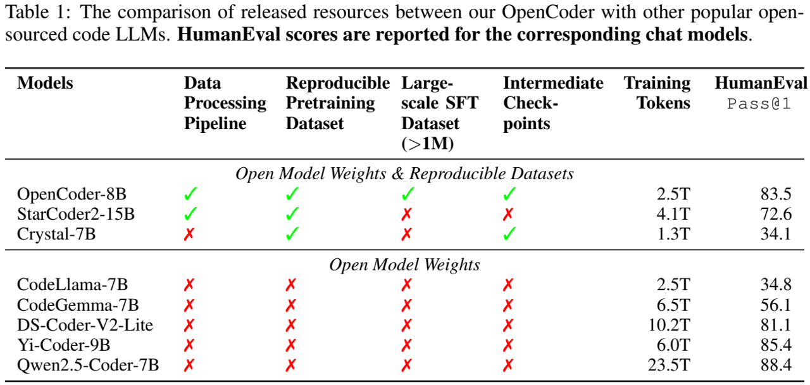

论文阅读九：OPENCODER：顶级代码LLM的开放手册
摘要
用于代码的大型语言模型（LLMs）在各种领域已经不可或缺，包括代码生成、推理任务和代理系统。虽然开放获取代码LLMs越来越接近专有模型的性能水平，但适用于严格科学研究的高质量代码LLMs，特别是那些具有可重复数据处理管道和透明训练协议的LLMs，仍然有限。这种稀缺性是由于各种挑战造成的，包括资源限制、伦理考虑以及保持模型先进性的竞争优势。为了弥补这一差距，我们引入了OpenCoder，这是一种顶级代码LLM，不仅实现了与领先模型相当的性能，而且还为研究界提供了一本“开放式手册”。与之前的大多数工作不同，我们不仅发布了模型权重和推理代码，还发布了可重复的训练数据、完整的数据处理流程、严格的实验消融结果和详细的开放科学研究训练协议。通过这次全面的发布，我们确定了构建顶级代码LLM的关键要素：（1）数据清理的代码优化启发式规则和重复数据删除方法，（2）与代码相关的文本语料库的召回，以及（3）退火和监督微调阶段的高质量合成数据。通过提供这种程度的开放性，我们的目标是扩大对顶级代码LLM各个方面的访问，OpenCoder既是一个强大的模型，也是一个开放的基础，可以加速研究，并实现代码AI的可重复进步。 项目地址
OpenCoder在6B+参数尺度上超越了所有以前的完全开放模型（即具有开放模型权重和可复制数据集）和其他开放获取模型（即仅具有开放模型权重），将完全开放模型的前沿推向了新的高度。
引言
大型语言模型（LLMs）已经在各种领域[wang等人，2023；Que等人，2024；Liu等人，2024a；c；Wu等人，2024]取得显著成功，尤其是在代码相关的任务上，革新了当前软件开发（Qian等人，2024;Wang等人，2024）的范式。特定代码LLMs已经成为LLM研究中的一个关键领域，ChatGPT、Copilot和Cursor等工具重塑了开发人员的工作流程。尽管如此，与最先进的LLM（Hui等人，2024；Zhu等人，2024）相比，专注于代码的开源LLM（Li等人，2023；Tao等人，2024，Lozhkov等人，2024a；Zhang等人，2024a）的性能仍然不足，这主要是因为这些领先的模型将其训练数据集（LLM开发中的一个重要因素）保持为专有。这种缺乏透明度的情况限制了更广泛的研究界建立强有力的基线并深入了解顶级代码LLM工作原理的能力。
为了弥补这一差距，我们通过发布OpenCoder及其开发材料提出了三个主要目标：（1）首先，我们的目标是为学者提供精心策划和完全透明的强基线代码LLM，用于研究代码LLM的机械可解释性和数据分布。（2） 其次，我们打算对预训练和指令数据管理管道进行深入调查，以开发更强大的代码LLM。（3） 第三，通过详细审查模型的发展，我们希望基于透明代码LLM解锁更多样化的定制解决方案。通过OpenCoder，我们努力刺激和加速开源代码LLM社区的发展。
我们全面的对照实验突出了不同训练阶段顶级代码LLM数据管理的关键设计选择：（1）在预训练阶段，数据清理的重要性得到了强调（Zhou等人，2024），强调了去除非信息性数据，如纯十六进制代码和对学习过程没有贡献的过短代码片段。（2） 重复数据删除的影响是巨大的，文件级重复数据删除通过保持数据多样性和增强下游任务的模型性能，被证明比存储库级重复数据消除更有效（Li等人，2023）。（3） 还研究了GitHub star的影响，揭示了基于GitHub star计数过滤数据可能会降低数据多样性并影响整体数据分布，从而导致次优结果（Allal等人，2023）。（4） 在退火阶段，使用高质量的数据对于进一步增强模型的能力至关重要，这表明在模型训练的后期阶段，数据质量比数量更重要。（5） 最后，在指令调优阶段，两阶段指令调优策略被证明是有效的，允许模型最初获得广泛的功能，然后用特定于代码的任务对其进行改进，从而提高了理论和实际编码任务的性能。这五个关键点强调了数据质量、多样性和有针对性的增强策略在开发像OpenCoder这样的高性能代码生成模型中的重要性。
这项工作介绍了OpenCoder，这是一个完全开源的代码LLM，建立在透明的数据处理管道和可复制的数据集之上。如表1所示，我们提供了一本开放的食谱，通过提供数据清理管道、可复制的预训练数据集、大规模SFT语料库和中间检查点，从头开始构建代码LLM。OpenCoder通过其细致的数据处理和先进的训练方法，在多个代码LLM评估基准上取得了顶级结果，超出了预期。代码LLM开放式食谱的引入旨在推动代码智能研究领域的发展，并鼓励其在代码智能社区中的广泛使用。
预训练数据
预训练数据在LLMs的开发中至关重要，其中，数据的规模、质量和多样性极大第影响模型的整体性能。因此，我们介绍了一种高效且有效的方法，用于生成为我们的代码LLM预训练量身定制的数据。在本节中，我们将全面说明在一般预训练阶段和退火阶段使用的数据处理策略。
我们的OpenCoder与其他流行的开源代码LLM之间发布的资源的比较。记录相应聊天模型的HumanEval分数。

REFINECODE
预训练数据构成了大型语言模型能力的基础。在LLM开源社区中，Stack v2（Lozhkov等人，2024a）提供了一个有价值的代码数据集，极大地促进了代码LLM的训练。然而，Stack v2中训练部分的质量不足以训练具有最高性能的LLM。为了解决这个问题，我们提出了RefineCode，这是一个高质量、可重复的数据集，包含607种编程语言的9600亿个令牌，包含130多种语言特定的规则和定制的权重分配。该数据集由两个主要部分组成：原始代码和与代码相关的web数据。具体来说，截至2023年11月，我们主要从GitHub存储库收集原始代码，并从Stack v2收集非GitHub数据。此外，与代码相关的网络数据主要来源于网络语料库。附录D提供了与以前版本的Stack的详细比较。此外，为了确保质量和多样性，如图2所示，我们设计了一个复杂的数据处理管道来生成代码预训练语料库。在接下来的部分中，我们详细描述了我们的处理管道和RefineCode数据集的细节。
原始代码
为了确保高质量原始代码数据的管理，我们开发了特定于代码的数据处理管道，包括预处理、重复数据删除、转换、过滤、数据采样等模块。以下部分提供了这些过程的详细信息。
预处理 最初，我们排除大小超过8MB的文件，因为这些文件主要是非文本文件，需要相当大的资源开销。此外，鉴于GitHub上存在的各种文件类型，我们将选择范围限制在与编程语言相关的文件类型，这些文件类型的文件扩展名是linguist，并过滤那些容量低或质量低的类型。最后，我们保留了607种不同类型的编程语言文件。附录E中提供了包含和排除的编程语言的完整列表。
重复数据删除 重复数据删除的目的是构建一个无偏见和多样化的训练集，同时显著减少数据量。由于Github中源代码的重复性极高，我们在管道的早期优先考虑重复数据删除过程，并采用积极的文件级重复数据删除策略（见第6.1节中的详细分析）。更具体地说，我们利用精确重复数据删除和模糊重复数据删除方法来消除包含相同或几乎相同代码内容的文档，如下所示：
精确重复数据消除：由于代码库中分叉和复制粘贴的普遍存在，近75%的文件完全重复。因此，与一般的重复数据删除过程不同，在本模块的第一步，相同移除被应用于代码数据。我们计算每个文档的SHA256哈希值，比较具有相同哈希值的文件，只保留具有最高星计数和最新提交时间的代码文件。
模糊重复数据删除：遵循一般数据管道中的模糊重复数据消除设置，我们将原始文本拆分为5元片段（5-gram pieces），然后计算2048 MinHash函数（Broder，1997）。此外，我们利用LSH（Leskovec等人，2014）将波段设置为16，行设置为128，以仅保留具有最高星和最新提交时间的不同文件。此过程将删除6%的文件卷。
转换 过滤通常足以删除不符合特定条件的文件。然而，尽管文本大小很小，但某些问题在众多文件中普遍存在。在这种情况下，排除所有问题文件是不可接受的。相反，我们选择在过滤模块之前转换这些文件以纠正已识别的问题。具体来说，我们实现了两种类型的转换规则，如下所示：
版权删除：超过15%的代码文件，包括内容开头的版权声明，如“版权英特尔公司（C）2014-2016”，这些文件高度重复，与编码任务无关，可能会影响LLM的性能。因此，我们明确指出并从初始代码注释中删除了这些版权声明。
减少PII：个人身份信息（PII）包括密码、电子邮件、IP地址等内容。对包含个人身份信息的数据进行培训意味着存在重大的隐私风险。因此，我们使用复杂的正则表达式来检测这些信息，并将其替换为占位符，如“
过滤 GitHub上原始代码文件的质量表现出显著的可变性，较低质量的代码可能会阻碍LLM预训练过程。鉴于代码与自然语言的不同性质，高质量代码的标准与自然语言有很大不同。此外，不同的编程语言也表现出不同的特性。基于此，我们认为，设计一套专门针对预训练数据特征的详细启发式过滤规则对于提高模型的能力非常重要。从Gunasekar等人（2023）提出的高质量代码数据原则中汲取灵感，我们在设计过滤器时考虑了以下指导方针：1）过滤掉自包含性差的文件；2） 过滤掉逻辑结构较差或最小的文件；3） 删除明显偏离标准格式的文件。